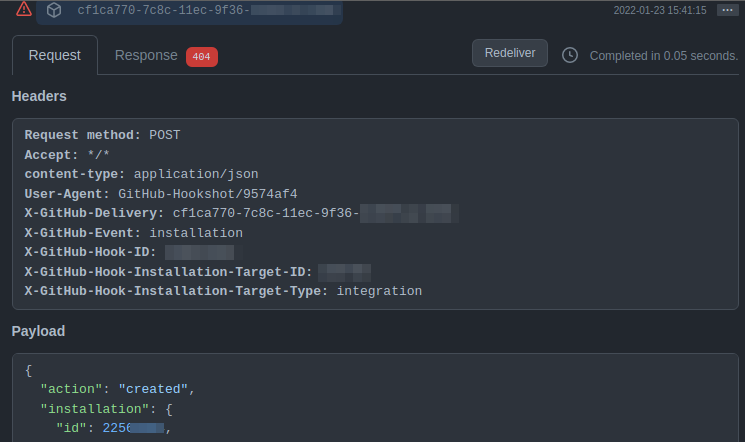
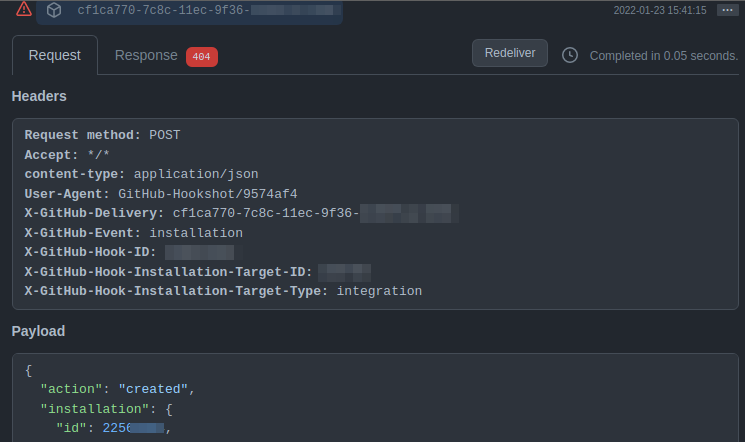

Github Extension
The Github extension allows Gofer pipelines to be run on Github webhook events. This makes it possible to write event driven workloads that depend on an action happening on Github.
See the events section below for all supported events and the environment variables they pass to each pipeline.
:::info Due to the nature of Github's API and webhooks, you'll need to first set up a new Github app to use with Gofer's Github extension.
Steps to accomplish this can be found in the additional steps section. :::
:::danger The Github extension requires the external events feature of Gofer in order to accept webhooks from Github's servers. This requires your application to take traffic from external, potentially unknown sources.
Visit the external events page for more information on how to configure Gofer's external events endpoint.
If Github is your only external extension, to increase security consider limiting the IP addresses that can access Gofer's external events endpoint. :::
Pipeline Configuration
repository: The Github repository you would like to listen for events from. The format is in the form <organization>/<repository>.
Extension Configuration
Extension configurations are set upon startup and cannot be changed afterwards.
The Github extension requires the setup and use of a new Github app. You can view setup instructions below which will walk you through how to retrieve the required env var variables.
| EnvVar | Default | Description |
|---|---|---|
| GOFER_EXTENSION_GITHUB_APPS_ID | Required | The Github app ID |
| GOFER_EXTENSION_GITHUB_APPS_INSTALLATION | Required | The Github installation ID. This can be found by viewing the webhook payload delivery. See a more details walkthrough on where to find this below. |
| GOFER_EXTENSION_GITHUB_APPS_KEY | Required | The base64'd private key of the Github app. This can be generated during Github app creation time. |
| GOFER_EXTENSION_GITHUB_APPS_WEBHOOK_SECRET | Required | The Github app webhook secret key. This should be a long, randomized character string. It will be used to verify that an event came from Github and not another source. |
extensions {
registered_extensions "github" {
image = "ghcr.io/clintjedwards/gofer/extension_github:latest"
env_vars = {
"GOFER_EXTENSION_GITHUB_APPS_ID": "112348",
"GOFER_EXTENSION_GITHUB_APPS_INSTALLATION": "99560091",
"GOFER_EXTENSION_GITHUB_APPS_KEY": <<EOT
TUtkUnhYY01LTUI1ejgzZU84MFhKQWhoNnBkaFlCQlg0NGl5awpUUTBuaENySGRVT2kvN3hVaHp6
eTgxb3d0RUdpdUFQakJIOVhpSlczQm9hazYrSTZKWjU2RC95YllPbkVSaTdFClIxVkRQeGdGa0lE
NHdUbmtHdU4vdFY1VzBuZ3Q1aW0yVG5OVGVqc0NnWUVBb0pBMlJXZ2ZaSDdobVo3VS82TFUKSi9a
WTBZYmNkOU80anpYdWRUTUo1TXVKcVEwY004bnZhb09tS1Q1ekRadnBla01sRDlaYmZ4Rlg2Mzh3
N2ZuZwp0N05lbGFZc3IxYUhFWi9Rd2pveFo2RXpEWUJSQ0M2SEFvQmJXZmdwc1FCMkhNV3lzb2ls
LUVORCBSU0EgUFJJVkFURSBLRVktLS0tLQo=
EOT
"GOFER_EXTENSION_GITHUB_APPS_WEBHOOK_SECRET": "somereallylongstringofcharacters",
}
}
}
Additional setup
Due to the nature of Github's API and webhooks, you'll need to first set up a new Github app to use with Gofer's Github extension. Once this app has been set up, you'll have access to all the required environment variables that you'll need to pass into Gofer's server configuration.
Here is a quick and dirty walkthrough on the important parts of setting up the Github application.
1. Create a new Github application:
Github's documentation will be the most up to date and relevant so please see their walkthrough.
On the configuration page for the new Github application the following should be noted:
-
APP ID: Take note of the id; it will be used later for extension configuration.
-
Webhook URL: Should be the address of your Gofer's external extension instance and pointing to the events/github endpoint:
ex: https://mygoferinstance.yourdomain.com/external/github -
Webhook Secret: Make this a secure, long, random string of characters and note it for future extension configuration.
-
Private Keys: Generate a private key and store it somewhere safe. You'll need to base64 this key and insert it into the extension configuration.
base64 ~/Desktop/myorg-gofer.2022-01-24.private-key.pem
2. Find the installation ID
Once the Github application has been created, install it.
This will give you an opportunity to configure the permissions and scope of the Github application.
It is recommended that you give read-only permissions to any permissions that might include webhooks and read-write for code-suite and code-runs.
The installation ID is unfortunately hidden in an event that gets sent once the Github app has been created and installed. You can find it by navigating to the settings page for the Github application and then viewing it in the "Recent Deliveries" page.
🪧 These recent deliveries only last a short amount of time, so if you take a while to check on them, they might not exist anymore. If that has happened you should be able to create another event and that will create another recent delivery.
 

Events
Gofer's extensions have the ability to pass along event specific information in the form of environment variables that get injected into each container's run. Most of these variables are pulled from the webhook request that comes in.
Below is a breakdown of the environment variables that are passed to a run based on the event that was generated. You can find more information about the format the variables will be in by referencing the payloads for the event.
Events below are the only events that are supported.
| Event | Metadata |
|---|---|
| create | "GOFER_EXTENSION_GITHUB_REF "GOFER_EXTENSION_GITHUB_REF_TYPE" "GOFER_EXTENSION_GITHUB_REPOSITORY" |
| push | "GOFER_EXTENSION_GITHUB_REF" "GOFER_EXTENSION_GITHUB_REPOSITORY" "GOFER_EXTENSION_GITHUB_HEAD_COMMIT_ID" "GOFER_EXTENSION_GITHUB_HEAD_COMMIT_AUTHOR_NAME" "GOFER_EXTENSION_GITHUB_HEAD_COMMIT_AUTHOR_EMAIL" "GOFER_EXTENSION_GITHUB_HEAD_COMMIT_AUTHOR_USERNAME" "GOFER_EXTENSION_GITHUB_HEAD_COMMIT_COMMITER_NAME" "GOFER_EXTENSION_GITHUB_HEAD_COMMIT_COMMITER_EMAIL" "GOFER_EXTENSION_GITHUB_HEAD_COMMIT_COMMITER_USERNAME" |
| release | "GOFER_EXTENSION_GITHUB_ACTION" "GOFER_EXTENSION_GITHUB_REPOSITORY" "GOFER_EXTENSION_GITHUB_RELEASE_TAG_NAME" "GOFER_EXTENSION_GITHUB_RELEASE_TARGET_COMMITISH" "GOFER_EXTENSION_GITHUB_RELEASE_AUTHOR_LOGIN" "GOFER_EXTENSION_GITHUB_RELEASE_CREATED_AT" "GOFER_EXTENSION_GITHUB_RELEASE_PUBLISHED_AT" |